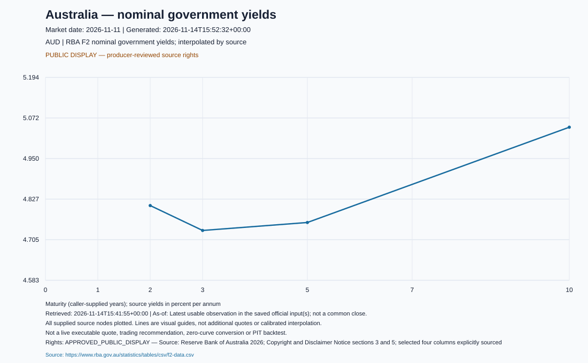

Generated · Author: pengyi
2026-11-11 · AUD · RBA F2 nominal government yields; interpolated by source · 4 points

Open chart · Official data source · Terms and attribution
Source: Reserve Bank of Australia 2026; Copyright and Disclaimer Notice sections 3 and 5; selected four columns explicitly sourced to RBA. Chart by P-Curve; no endorsement or use as a financial benchmark.
| Tenor | Yield |
|---|---|
| 2Y | 4.808 |
| 3Y | 4.733 |
| 5Y | 4.757 |
| 10Y | 5.044 |